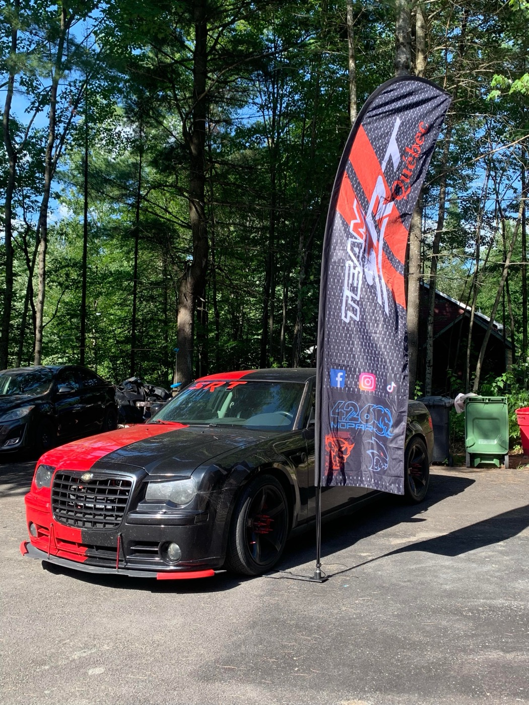
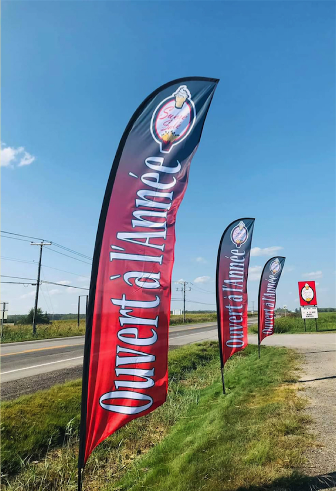
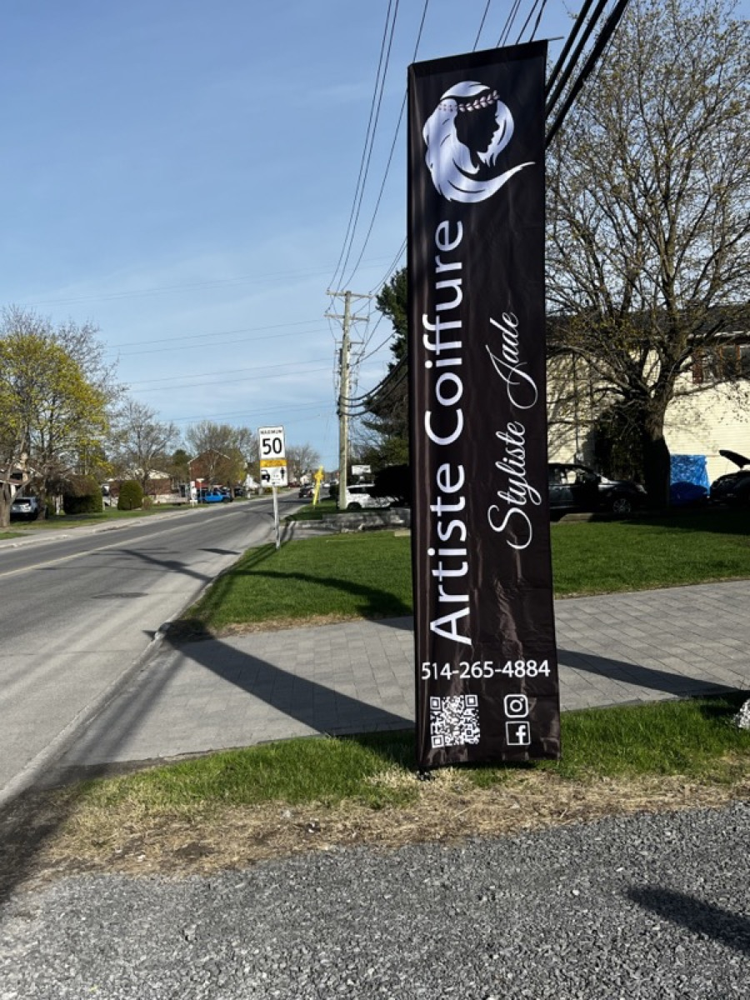
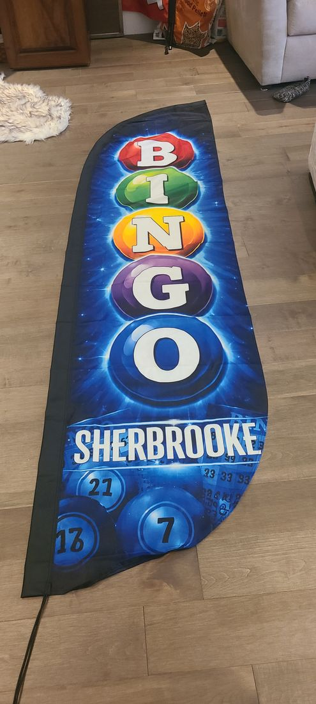
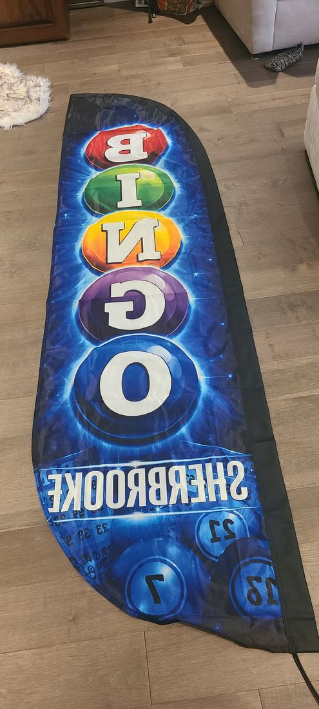
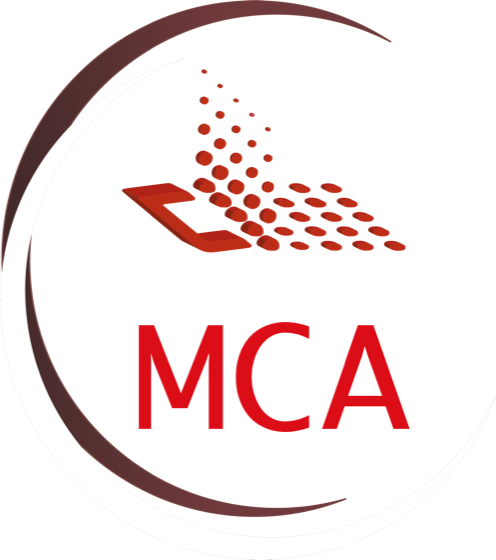

Drapeaux beach et rectangulaires, imprimés pour le Québec. Déposez votre logo ci‑dessous — il flotte tout de suite, sur du vrai tissu.
Chez MCA, elles viennent avec le drapeau.
On monte votre logo, vos textes et vos couleurs sur le drapeau, et ça ne s'ajoute pas à la facture. Ailleurs, cette étape se facture.
Les ajustements aussi. Si votre projet demande un concept entièrement nouveau, on en parle avant de le faire — jamais sur la facture.
Une maquette avec vos couleurs et votre logo avant tout engagement. Le drapeau en haut de page en est déjà une.
Les photos plus bas ne sont pas des rendus : ce sont nos drapeaux, plantés chez nos clients, photographiés sur place.
Le drapeau est le métier. La base se choisit selon la surface où il se plante.

Forme effilée sur pôle courbé — c'est lui qui bouge. 1 m · 2,5 m · 3,5 m · 4,5 m. Découpe droite ou convexe.

Tissu plat, horizontal ou vertical. Sur pôle ou en bannière murale — intérieur comme extérieur.
Piquet à pelouse, croix, plaque, base voiture, 45°, 90°. Aucune ne convient à votre projet ? On la fabrique sur mesure.
La question qu'on nous pose le plus souvent. Voici la différence, en vraies photos de drapeaux livrés : le même drapeau, vu de devant puis de derrière.


Simple face — l'image est imprimée d'un côté et traverse le tissu. De l'autre côté, on la voit à l'envers, comme dans un miroir. Idéal contre un mur ou quand on arrive toujours du même côté.
Astuce à deux drapeaux — vous commandez deux drapeaux simple face ? Nous en imprimons un « gauche » et un « droit ». Peu importe la direction d'où l'on arrive, il y en a toujours un qui se lit à l'endroit. Deux drapeaux, c'est aussi une présence doublée : plus d'impact et plus de visibilité pour votre commerce.
Double face offert en option — le message se lit à l'endroit des deux côtés. Pour un drapeau au bord de la route, visible des deux sens de la circulation.
Tissu — polyester 110 g imprimé par sublimation, inclus.
Canvas 130 g Glossy offert en option — une trame plus serrée qui garde les couleurs plus vives.
3,5 × 2 po. De 100 à 25 000 cartes. Dites-nous ce qu'il vous faut — on vous revient avec un prix.
Le même configurateur, dans votre poche — et la galerie complète.

Le Groupe MCA, c'est un atelier de Châteauguay qui imprime des drapeaux publicitaires. Plus de 400 commerces du Québec en ont planté un devant leur porte. Cette confiance-là ne s'achète pas — elle se bâtit un drapeau à la fois, et à force, on sait ce qui tient dans le vent et ce qui se voit de loin.
Si votre visuel ne va pas fonctionner à dix mètres, on vous le dit avant d'imprimer.
Un endroit inhabituel ? On vous fabrique l'ancrage qu'il vous faut.
Un drapeau se juge sur le bord de la route, pas sur un écran à cinquante centimètres. Vous parlez directement à la personne qui monte votre visuel et qui répond au téléphone.
Gratuit, sans engagement. Réponse le jour même en semaine.